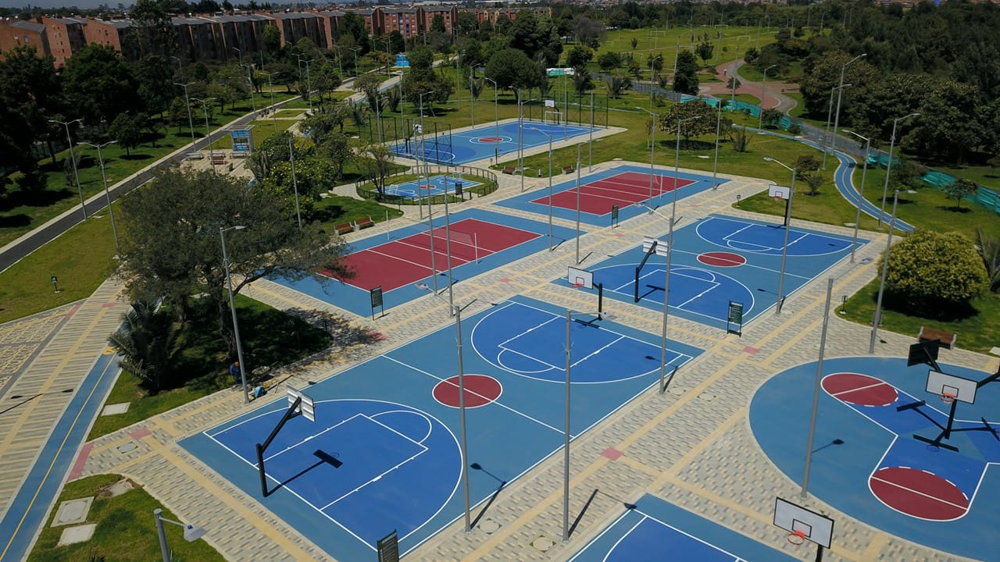
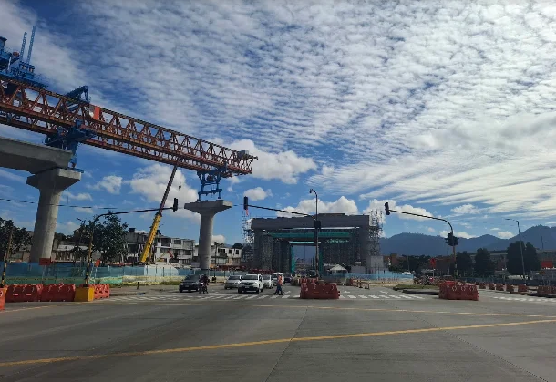
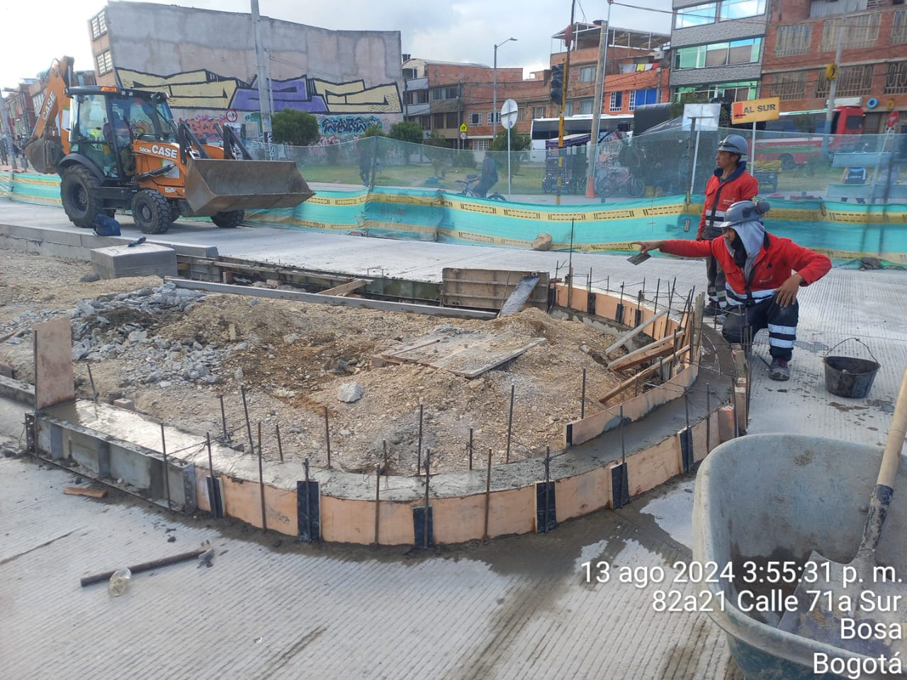
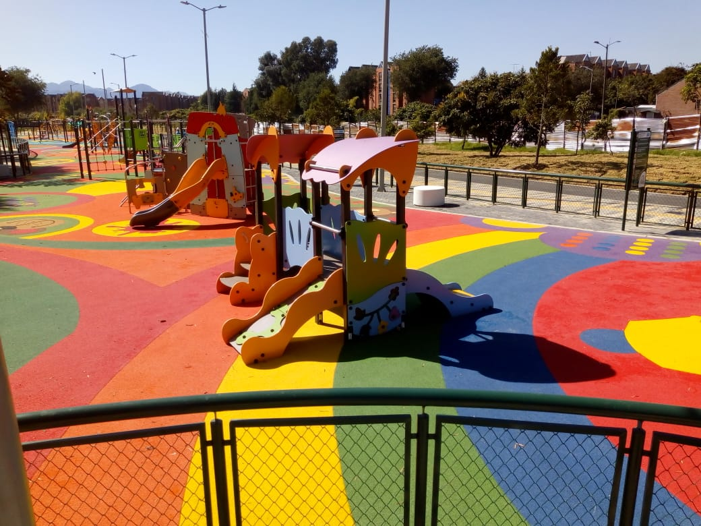
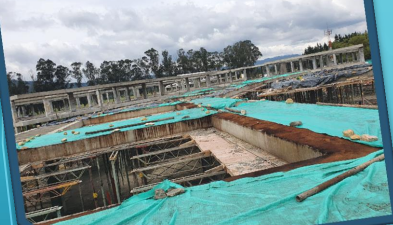
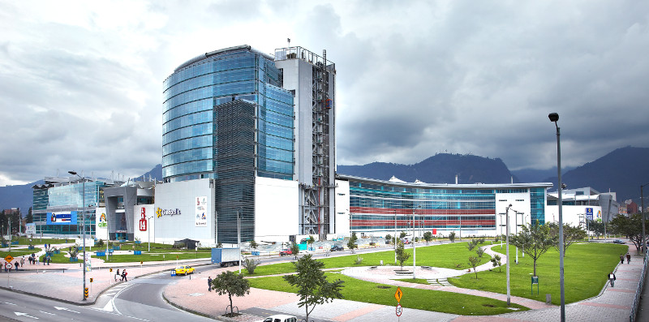
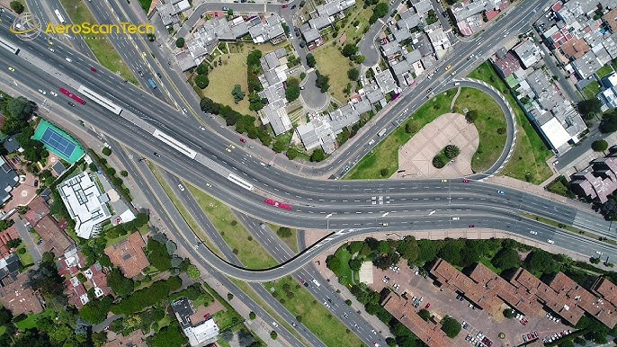

Excavación y retiro
Movimiento y retiro de material para preparar el terreno de su proyecto.
Soluciones en obras civiles, estructuras e infraestructura, con compromiso técnico, calidad y cumplimiento.

Construcciones y Transportes JMC S.A.S. desarrolla actividades de construcción, obras civiles, infraestructura y obras arquitectónicas en Colombia. Acompañamos cada conversación con una mirada práctica, técnica y orientada al cumplimiento.
Conozca nuestro enfoque →Un portafolio técnico que conecta preparación, construcción, acabados e intervención especializada.
Movimiento y retiro de material para preparar el terreno de su proyecto.
Suministro de materiales según las necesidades técnicas de la obra.
Trabajos de cimentación como soporte fundamental de la construcción.
Construcción de elementos estructurales y sistemas que dan forma al proyecto.
Soluciones para cerramientos, divisiones y terminaciones de obra.
Juntas de puentes y reforzamiento de estructuras con fibra de carbono.
Una selección de experiencias registradas en el portafolio de JMC.







Este registro reúne obras ejecutadas por Jonás Antonio Hidalgo Arcos, actual representante legal de JMC S.A.S., como parte de su trayectoria y experiencia profesional. La información no implica que todos los proyectos hayan sido contratados o ejecutados directamente por JMC S.A.S.
| # | Proyecto | Empresa contratante o consorcio | Tipo | Fecha | Cantidad |
|---|---|---|---|---|---|
| 01 | Metrolínea 1 | No documentada | Infraestructura | No documentada | No documentada |
| 02 | Mejoramiento y mantenimiento de la vía de acceso y puentes El Morro, El Pindo y Aguaclara, Puerto de Tumaco | Consorcio Protumaco | Vías y transporte | No documentada | No documentada |
| 03 | Conexión 20 | Consorcio Conexión 20 | Infraestructura | No documentada | No documentada |
| 04 | Parque Juan Amarillo | Consorcio Juan Amarillo JMC | Espacio público | No documentada | No documentada |
| 05 | Mega Colegio Pablo VI | Arco Constructores S.A.S. | Edificaciones | No documentada | No documentada |
| 06 | Molino de arroz Roa | Tekman S.A.S. | Edificaciones | No documentada | No documentada |
| 07 | Terranum Gold 1 – Gold 2 | Sainc Ingenieros | Edificaciones | No documentada | No documentada |
| 08 | Nueva Sede Administrativa del Recurso del Agua de la EAAB | Consorcio Edificaciones Bogotá | Edificaciones | No documentada | No documentada |
| 09 | Intersección Valorización Bogotá 25, infraestructura puente Calle 106 con Cra. 9 | Consorcio Edificaciones Bogotá | Puentes | No documentada | No documentada |
| 10 | Construcción puente Calle 100 con Cra. 15 | Sainc Ingenieros | Puentes | No documentada | No documentada |
| 11 | Construcción Centro Comercial Calima La 14 | Sainc Ingenieros | Edificaciones | No documentada | No documentada |
| 12 | Construcción | Consorcio ACC-2007, AIA, Colpatria | Edificaciones | No documentada | No documentada |
| 13 | Construcción de la cimentación y estructura del Centro Comercial Tu Casa | Promotora Inmobiliaria Tu Casa | Edificaciones | No documentada | No documentada |
| 14 | Mantenimiento estructural de 2 puentes Av. 68 con Calle 26 | Unión Temporal Puente Calle 26 | Reforzamiento y estabilización | No documentada | 2 puentes |
| 15 | Construcción paso deprimido y espacio público | AIA, Estyma, JMV | Espacio público | No documentada | No documentada |
| 16 | Alto de la Virgen, Localidad de Suba | AIA, Estyma, JMV | Vías y transporte | No documentada | No documentada |
| 17 | Infraestructura y superestructura de 6 puentes vehiculares en Av. Suba con Av. Boyacá y espacio público | Consorcio Alianza Suba | Puentes | No documentada | 6 puentes |
| 18 | Reforzamiento estructura Puente Vehicular Puente Cra. 13 por Calle 26 y espacio público | Unión Temporal Puente Calle 26 | Reforzamiento y estabilización | No documentada | No documentada |
| 19 | Construcción Puente Vehicular en la variante Mamonal Gambote en la ciudad de Cartagena | JMV Ingenieros | Puentes | No documentada | No documentada |
| 20 | Construcción puente vehicular sobre el río Sinú, vía San Pelayo - Moñitos | No documentada | Puentes | No documentada | No documentada |
| 21 | Estructura y superestructura del Puente vehicular, puente Calle 170 por Autopista Norte | Unión Temporal Puente Calle 170 | Puentes | No documentada | No documentada |
| 22 | Estructura y superestructura del Puente vehicular, puente Calle 100 | Unión Temporal Puente Calle 100 | Puentes | No documentada | No documentada |
| 23 | Reforzamientos Puentes Vehiculares peatonales y espacio público, Autopista Sur y Mariscal Sucre | JMV Ingenieros Contratistas Ltda. | Reforzamiento y estabilización | No documentada | No documentada |
| 24 | Estabilización de la banca en la K. 82+352 de la Carretera Girardot – Bogotá | JMV Ingenieros Contratistas Ltda. | Reforzamiento y estabilización | No documentada | No documentada |
| 25 | Construcción túnel en el Boquerón de la vía Bogotá Villavicencio | Dragados Construcciones | Infraestructura | No documentada | No documentada |
| 26 | Construcción segunda pista Aeropuerto El Dorado Bogotá | Dragados Construcciones | Infraestructura | No documentada | No documentada |
| 27 | Ampliación de la Cra. 7ª Vía a la Caro | JMV Ingenieros | Vías y transporte | No documentada | No documentada |
No encontramos obras con esos criterios. Pruebe con otro nombre, empresa o tipo.
Imágenes de obra, equipos y espacios construidos por el equipo JMC.
Una forma clara de ordenar la conversación y avanzar con precisión en cada fase.
Escuchamos el alcance, el contexto y las prioridades del proyecto.
Traducimos la necesidad en una ruta técnica de trabajo.
Coordinamos las actividades con atención al detalle y al cumplimiento.
Cerramos cada etapa con comunicación clara y foco en el resultado.
Cuéntenos qué necesita. La información del formulario abrirá su aplicación de correo para que pueda enviarla directamente a nuestro equipo.